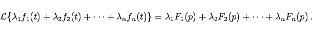
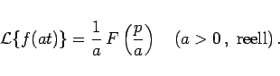
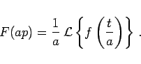
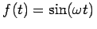
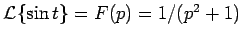
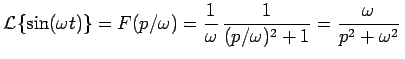

Inhalt Index DeskTop Bronstein

 Integraltransformationen Laplace-Transformation Eigenschaften der Laplace-Transformation Rechenregeln zur Laplace-Transformation
Integraltransformationen Laplace-Transformation Eigenschaften der Laplace-Transformation Rechenregeln zur Laplace-Transformation


|  | (15.9) |
|  | (15.10a) |
In Analogie dazu gilt für die Rücktransformation
|  | (15.10b) |
Die folgende Abbildung zeigt die Ähnlichkeitssatzes am Beispiel einer Sinusfunktion.
| Beispiel |
|
Berechnung der LAPACE-Transformierten von . Die Korrespondenz für die Sinusfunktion lautet . Die Anwendung des Ähnlichkeitssatzes liefert . |